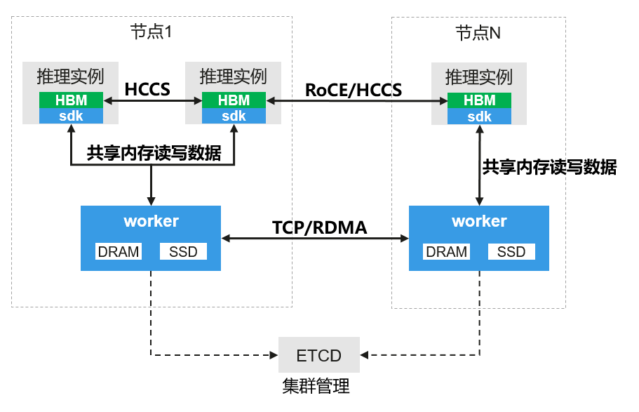

vLLM Ascend使用OpenYuanrong作为多级缓存最佳实践¶
背景介绍¶
本指南以 GLM-5 模型部署为例，提供在 Atlas 800T/I A2 服务器（双机）或 Atlas 800T/I A3 服务器（单机）上使用 Yuanrong Datasystem 作为 KV Cache 多级缓存后端的详细部署步骤。
GLM-5 是采用混合专家架构的高效推理模型，专为复杂系统工程和长时序智能体任务设计。使用 Yuanrong 作为 KV Pool 后端可以实现高效的 KV Cache 存储和请求间的复用。

部署环境准备¶
GLM-5 单实例部署所需的软硬件环境依赖如下：
软硬件名称 |
版本/规格 |
作用 |
|---|---|---|
Atlas 800T/I A3（单机） |
16张NPU卡(每张64G显存) |
运行异构大模型推理的物理硬件，需已配置 RoCE 网络以获得最佳性能 |
“vllm-ascend:0.18.0rc1” |
提供包含 vLLM、CANN 等预配置的容器运行环境 |
|
- |
智能体应用设计的高效推理模型权重 |
|
- |
提供 KV Cache 外部存储与复用的核心组件 |
|
etcd |
3.5 |
Datasystem 集群与节点管理依赖组件 |
软硬件名称 |
版本/规格 |
作用 |
|---|---|---|
Atlas 800T/I A2(双机) |
8张NPU卡(每张64G显存) |
运行异构大模型推理的物理硬件，需已配置 RoCE 网络以获得最佳性能 |
“vllm-ascend:0.18.0rc1” |
提供包含 vLLM、CANN 等预配置的容器运行环境 |
|
- |
智能体应用设计的高效推理模型权重 |
|
- |
提供 KV Cache 外部存储与复用的核心组件 |
|
etcd |
3.5 |
Datasystem 集群与节点管理依赖组件 |
下面给出以上依赖的获取与环境准备方法。
获取与运行基础环境¶
1. 准备模型权重
下载 GLM-5 W4A8 模型权重并放置到宿主机指定目录，例如 /home/models/GLM-5-w4a8/。
下载地址：魔搭社区
# 下载命令
pip install modelscope
modelscope download --model Eco-Tech/GLM-5-w4a8 --local_dir /home/models
2. 下载 Docker 镜像
本教程使用的 Docker 镜像版本为 ‘vllm-ascend:0.18.0rc1’。
版本兼容性说明： 请确保vLLM-ascend镜像版本不低于0.18.0rc1。在版本及后续版本中，系统已支持Yuanrong Datasystem作为多级缓存后端。
如本地尚未下载，可按机器类型执行如下命令：
docker pull quay.io/ascend/vllm-ascend:0.18.0rc1
docker pull quay.io/ascend/vllm-ascend:0.18.0rc1-a3
提示：如果下载较慢，可将 quay.io 替换为 m.daocloud.io/quay.io 或 quay.nju.edu.cn 以加速拉取。
3. 启动 Docker 容器
在两个节点上分别启动包含 8 张 NPU 卡的 Docker 容器：
export IMAGE=quay.io/ascend/vllm-ascend:0.18.0rc1
export NAME=vllm-ascend
docker run --rm \
--name $NAME \
--shm-size=1g \
--net=host \
--device /dev/davinci0 \
--device /dev/davinci1 \
--device /dev/davinci2 \
--device /dev/davinci3 \
--device /dev/davinci4 \
--device /dev/davinci5 \
--device /dev/davinci6 \
--device /dev/davinci7 \
--device /dev/davinci_manager \
--device /dev/devmm_svm \
--device /dev/hisi_hdc \
-v /usr/local/dcmi:/usr/local/dcmi \
-v /usr/local/Ascend/driver/tools/hccn_tool:/usr/local/Ascend/driver/tools/hccn_tool \
-v /usr/local/bin/npu-smi:/usr/local/bin/npu-smi \
-v /usr/local/Ascend/driver/lib64/:/usr/local/Ascend/driver/lib64/ \
-v /usr/local/Ascend/driver/version.info:/usr/local/Ascend/driver/version.info \
-v /etc/ascend_install.info:/etc/ascend_install.info \
-v /etc/hccn.conf:/etc/hccn.conf \
-v /root/.cache:/root/.cache \
-it $IMAGE bash
启动包含 16 张 NPU 卡的 Docker 容器：
export IMAGE=quay.io/ascend/vllm-ascend:0.18.0rc1-a3
export NAME=vllm-ascend
docker run --rm \
--name $NAME \
--shm-size=1g \
--net=host \
--device /dev/davinci0 \
--device /dev/davinci1 \
--device /dev/davinci2 \
--device /dev/davinci3 \
--device /dev/davinci4 \
--device /dev/davinci5 \
--device /dev/davinci6 \
--device /dev/davinci7 \
--device /dev/davinci8 \
--device /dev/davinci9 \
--device /dev/davinci10 \
--device /dev/davinci11 \
--device /dev/davinci12 \
--device /dev/davinci13 \
--device /dev/davinci14 \
--device /dev/davinci15 \
--device /dev/davinci_manager \
--device /dev/devmm_svm \
--device /dev/hisi_hdc \
-v /usr/local/dcmi:/usr/local/dcmi \
-v /usr/local/Ascend/driver/tools/hccn_tool:/usr/local/Ascend/driver/tools/hccn_tool \
-v /usr/local/bin/npu-smi:/usr/local/bin/npu-smi \
-v /usr/local/Ascend/driver/lib64/:/usr/local/Ascend/driver/lib64/ \
-v /usr/local/Ascend/driver/version.info:/usr/local/Ascend/driver/version.info \
-v /etc/ascend_install.info:/etc/ascend_install.info \
-v /etc/hccn.conf:/etc/hccn.conf \
-v /root/.cache:/root/.cache \
-it $IMAGE bash
安装 openYuanrong datasystem¶
根据部署环境的网络情况，选择在线或离线安装方式。
在线安装¶
pip install openyuanrong-datasystem
离线安装¶
离线安装请参考安装指南
验证安装：
python -c "import yr.datasystem; print('Yuanrong Datasystem 安装成功')"
部署openYuanrong datasystem¶
本教程为单实例部署方式，etcd 和 Datasystem Worker 均在 vLLM-Ascend 容器内启动。
启动 Yuanrong 服务¶
在每个节点上部署都需要启动 etcd 和 Datasystem Worker，如果是双机部署需要连接同一个etcd。
创建启动脚本 run_yr.sh：
#!/bin/bash
# 配置参数
export HOST_IP="<您的节点IP地址>"
export ETCD_IP="${HOST_IP}"
export WORKER_PORT=18481
export ETCD_PORT="${ETCD_PORT}"
export SHM_SIZE=512000
export NODE_TIMEOUT=30
export NODE_DEAD_TIMEOUT=60
export LIVENESS_PATH=/workspace/liveness
# 启动 etcd（单实例模式）
etcd \
--name etcd-single \
--data-dir /tmp/etcd-data \
--listen-client-urls http://0.0.0.0:${ETCD_PORT} \
--advertise-client-urls http://${ETCD_IP}:${ETCD_PORT} \
--listen-peer-urls http://0.0.0.0:2380 \
--initial-advertise-peer-urls http://${ETCD_IP}:2380 \
--initial-cluster etcd-single=http://${ETCD_IP}:2380 \
> /tmp/etcd.log 2>&1 &
# 等待 etcd 启动
sleep 3
# 验证 etcd 是否正常运行
etcdctl --endpoints "${ETCD_IP}:${ETCD_PORT}" put key "value"
etcdctl --endpoints "${ETCD_IP}:${ETCD_PORT}" get key
# 启动 Datasystem Worker
dscli start -w \
--worker_address ${HOST_IP}:${WORKER_PORT} \
--etcd_address ${ETCD_IP}:${ETCD_PORT} \
--shared_memory_size_mb ${SHM_SIZE} \
--node_timeout_s ${NODE_TIMEOUT} \
--node_dead_timeout_s ${NODE_DEAD_TIMEOUT} \
--liveness_check_path ${LIVENESS_PATH}
echo "Yuanrong 服务启动完成"
echo "etcd 日志: /tmp/etcd.log"
如果想要使用多副本模式启动etcd：
运行脚本：
bash run_yr.sh
参考文档：etcd 官方文档，了解更多参数配置。
生产环境建议：上述示例为单实例部署，适用于测试和开发环境。对于可靠性要求较高的生产环境，建议部署 etcd 集群（通常 3 或 5 个节点）。集群部署请参考 etcd 集群部署指南。
Datasystem Worker 参数说明¶
参数 |
值 |
说明 |
|---|---|---|
worker_address |
${HOST_IP}:${WORKER_PORT} |
Worker 服务地址和端口 |
etcd_address |
${ETCD_IP}:${ETCD_PORT} |
etcd 服务发现地址 |
shared_memory_size_mb |
${SHM_SIZE} (512000) |
共享内存大小（500 GB） |
node_timeout_s |
${NODE_TIMEOUT} (600) |
节点超时时间（秒） |
node_dead_timeout_s |
${NODE_DEAD_TIMEOUT} (600000) |
节点死亡超时时间（毫秒） |
liveness_check_path |
${LIVENESS_PATH} |
存活检查路径 |
参考文档：Yuanrong Datasystem 文档，了解更多 worker 参数和环境变量配置。
停止 Worker:
dscli stop --worker_address ${HOST_IP}:${WORKER_PORT}
部署 GLM-5 模型¶
创建启动脚本 run_glm5_w4a8_yuanrong_a3.sh：
#!/bin/bash
# NPU 性能优化配置
export HCCL_OP_EXPANSION_MODE="AIV"
export OMP_PROC_BIND=false
export OMP_NUM_THREADS=1
export HCCL_BUFFSIZE=200
export PYTORCH_NPU_ALLOC_CONF=expandable_segments:True
export VLLM_ASCEND_BALANCE_SCHEDULING=1
# vLLM 配置
export VLLM_USE_V1=1
export VLLM_ENGINE_READY_TIMEOUT_S=1800
export PYTHONHASHSEED=0
# Yuanrong Datasystem 配置
export DS_WORKER_ADDR="<您的节点IP>:18481"
export DS_H2D_MEMCPY_POLICY="direct"
export DS_D2H_MEMCPY_POLICY="direct"
unset GOOGLE_LOGTOSTDERR GOOGLE_ALSOLOGTOSTDERR
MODEL_PATH="/home/models/GLM-5-w4a8"
vllm serve $MODEL_PATH \
--host 0.0.0.0 \
--port 1025 \
--data-parallel-size 1 \
--tensor-parallel-size 16 \
--enable-expert-parallel \
--seed 1024 \
--served-model-name glm-5 \
--max-num-seqs 8 \
--max-model-len 200000 \
--max-num-batched-tokens 4096 \
--trust-remote-code \
--gpu-memory-utilization 0.95 \
--quantization ascend \
--enable-chunked-prefill \
--enable-prefix-caching \
--async-scheduling \
--additional-config '{"multistream_overlap_shared_expert":true}' \
--speculative-config '{"num_speculative_tokens": 3, "method": "deepseek_mtp"}' \
--compilation-config '{"cudagraph_mode": "FULL_DECODE_ONLY"}' \
--kv-transfer-config '{
"kv_connector": "AscendStoreConnector",
"kv_role": "kv_both",
"kv_connector_extra_config": {
"lookup_rpc_port": "0",
"backend": "yuanrong"
}
}' 2>&1 | tee ./glm-5_yuanrong.log
在两个节点上分别创建启动脚本。
节点 0 创建 run_glm5_w4a8_yuanrong_a2_node0.sh：
#!/bin/bash
# 网络配置 - 根据实际环境修改
nic_name="bond0"
local_ip="100.100.135.173"
node0_ip="100.100.135.173"
export HCCL_OP_EXPANSION_MODE="AIV"
export HCCL_IF_IP=$local_ip
export GLOO_SOCKET_IFNAME=$nic_name
export TP_SOCKET_IFNAME=$nic_name
export HCCL_SOCKET_IFNAME=$nic_name
# NPU 性能优化配置
export OMP_PROC_BIND=false
export OMP_NUM_THREADS=1
export HCCL_BUFFSIZE=200
export VLLM_ASCEND_BALANCE_SCHEDULING=1
export PYTORCH_NPU_ALLOC_CONF=expandable_segments:True
# vLLM 配置
export VLLM_USE_V1=1
export VLLM_ENGINE_READY_TIMEOUT_S=1800
export PYTHONHASHSEED=0
# Yuanrong Datasystem 配置
export DS_WORKER_ADDR="${local_ip}:18481"
export DS_H2D_MEMCPY_POLICY="direct"
export DS_D2H_MEMCPY_POLICY="direct"
unset GOOGLE_LOGTOSTDERR GOOGLE_ALSOLOGTOSTDERR
MODEL_PATH="/home/models/GLM-5-w4a8"
vllm serve $MODEL_PATH \
--host 0.0.0.0 \
--port 1025 \
--data-parallel-size 2 \
--data-parallel-size-local 1 \
--data-parallel-address $node0_ip \
--data-parallel-rpc-port 12890 \
--tensor-parallel-size 8 \
--quantization ascend \
--seed 1024 \
--served-model-name glm-5 \
--enable-expert-parallel \
--max-num-seqs 2 \
--max-model-len 131072 \
--max-num-batched-tokens 4096 \
--trust-remote-code \
--gpu-memory-utilization 0.95 \
--compilation-config '{"cudagraph_mode": "FULL_DECODE_ONLY"}' \
--additional-config '{"multistream_overlap_shared_expert":true}' \
--speculative-config '{"num_speculative_tokens": 3, "method": "deepseek_mtp"}' \
--enable-chunked-prefill \
--enable-prefix-caching \
--async-scheduling \
--kv-transfer-config '{
"kv_connector": "AscendStoreConnector",
"kv_role": "kv_both",
"kv_connector_extra_config": {
"lookup_rpc_port": "0",
"backend": "yuanrong"
}
}' 2>&1 | tee ./glm-5_yuanrong.log
节点 1 创建 run_glm5_w4a8_yuanrong_a2_node1.sh：
#!/bin/bash
# 网络配置 - 根据实际环境修改
nic_name="enp61s0f2"
local_ip="100.100.135.190"
node0_ip="100.100.135.173"
export HCCL_OP_EXPANSION_MODE="AIV"
export HCCL_IF_IP=$local_ip
export GLOO_SOCKET_IFNAME=$nic_name
export TP_SOCKET_IFNAME=$nic_name
export HCCL_SOCKET_IFNAME=$nic_name
# NPU 性能优化配置
export OMP_PROC_BIND=false
export OMP_NUM_THREADS=1
export HCCL_BUFFSIZE=200
export VLLM_ASCEND_BALANCE_SCHEDULING=1
export PYTORCH_NPU_ALLOC_CONF=expandable_segments:True
# vLLM 配置
export VLLM_USE_V1=1
export VLLM_ENGINE_READY_TIMEOUT_S=1800
export PYTHONHASHSEED=0
# Yuanrong Datasystem 配置
export DS_WORKER_ADDR="${local_ip}:18481"
export DS_H2D_MEMCPY_POLICY="direct"
export DS_D2H_MEMCPY_POLICY="direct"
unset GOOGLE_LOGTOSTDERR GOOGLE_ALSOLOGTOSTDERR
MODEL_PATH="/home/models/GLM-5-w4a8"
vllm serve $MODEL_PATH \
--host 0.0.0.0 \
--port 1026 \
--headless \
--data-parallel-size 2 \
--data-parallel-size-local 1 \
--data-parallel-start-rank 1 \
--data-parallel-address $node0_ip \
--data-parallel-rpc-port 12890 \
--tensor-parallel-size 8 \
--quantization ascend \
--seed 1024 \
--served-model-name glm-5 \
--enable-expert-parallel \
--max-num-seqs 2 \
--max-model-len 131072 \
--max-num-batched-tokens 4096 \
--trust-remote-code \
--gpu-memory-utilization 0.95 \
--compilation-config '{"cudagraph_mode": "FULL_DECODE_ONLY"}' \
--additional-config '{"multistream_overlap_shared_expert":true}' \
--speculative-config '{"num_speculative_tokens": 3, "method": "deepseek_mtp"}' \
--enable-chunked-prefill \
--enable-prefix-caching \
--async-scheduling \
--kv-transfer-config '{
"kv_connector": "AscendStoreConnector",
"kv_role": "kv_both",
"kv_connector_extra_config": {
"lookup_rpc_port": "1",
"backend": "yuanrong"
}
}' 2>&1 | tee -a ./glm-5_yuanrong.log
配置参数说明¶
参数 |
值 |
说明 |
|---|---|---|
tensor-parallel-size |
16 |
使用 16 张 NPU 卡 |
data-parallel-size |
1 |
数据并行大小 |
max-model-len |
200000 |
最大上下文长度 |
max-num-batched-tokens |
4096 |
最大批处理 token 数 |
max-num-seqs |
8 |
最大并发序列数 |
gpu-memory-utilization |
0.95 |
GPU 显存利用率 |
quantization |
ascend |
使用 Ascend 量化 |
enable-expert-parallel |
(标志) |
启用 MoE 专家并行 |
enable-chunked-prefill |
(标志) |
启用分块预填充 |
enable-prefix-caching |
(标志) |
启用前缀缓存 |
async-scheduling |
(标志) |
启用异步调度 |
kv_connector |
AscendStoreConnector |
使用 AscendStoreConnector |
kv_role |
kv_both |
同时支持生产和消费 |
backend |
yuanrong |
使用 Yuanrong 后端 |
lookup_rpc_port |
0 |
RPC 查找端口 |
参数 |
值 |
说明 |
|---|---|---|
tensor-parallel-size |
8 |
每节点使用 8 张 NPU 卡 |
data-parallel-size |
2 |
数据并行大小（2 节点） |
data-parallel-size-local |
1 |
本地数据并行大小 |
max-model-len |
131072 |
最大上下文长度 |
max-num-batched-tokens |
4096 |
最大批处理 token 数 |
max-num-seqs |
2 |
最大并发序列数 |
gpu-memory-utilization |
0.95 |
GPU 显存利用率 |
quantization |
ascend |
使用 Ascend 量化 |
enable-expert-parallel |
(标志) |
启用 MoE 专家并行 |
lookup_rpc_port (node0) |
0 |
节点 0 RPC 查找端口 |
lookup_rpc_port (node1) |
1 |
节点 1 RPC 查找端口 |
环境变量说明¶
环境变量 |
值 |
说明 |
|---|---|---|
|
AIV |
HCCL 算子扩展模式（AI Vector 优化） |
|
false |
OpenMP 线程绑定配置 |
|
1 |
OpenMP 线程数 |
|
200 |
HCCL 缓冲区大小 |
|
expandable_segments:True |
NPU 显存分配策略（减少碎片） |
|
1 |
启用平衡调度 |
|
1 |
启用 vLLM v1 架构 |
|
1800 |
引擎就绪超时时间（秒） |
|
0 |
Python 哈希种子，确保 KV Cache 键一致性 |
|
${HOST_IP}:18481 |
Yuanrong Worker 地址，必须与 dscli 启动参数一致 |
|
direct |
Host-to-Device 内存拷贝策略 |
|
direct |
Device-to-Host 内存拷贝策略 |
功能验证¶
服务启动后，验证部署是否成功：
检查服务状态¶
curl http://localhost:1025/health
测试推理¶
curl -H "Accept: application/json" \
-H "Content-type: application/json" \
-X POST \
-d '{
"model": "glm-5",
"messages": [{
"role": "user",
"content": "你好，请介绍一下人工智能的未来发展趋势。"
}],
"stream": false,
"ignore_eos": false,
"temperature": 0,
"max_tokens": 200
}' http://localhost:1025/v1/chat/completions
测试 KV Cache 复用¶
发送相同的提示词两次，验证 KV Cache 是否被复用：
# 第一次请求 - 填充 KV Cache
curl -H "Accept: application/json" \
-H "Content-type: application/json" \
-X POST \
-d '{
"model": "glm-5",
"messages": [{
"role": "user",
"content": "请详细解释机器学习的概念和基本原理。"
}],
"stream": false,
"temperature": 0,
"max_tokens": 100
}' http://localhost:1025/v1/chat/completions
# 第二次请求 - 命中 KV Cache（TTFT 更快）
curl -H "Accept: application/json" \
-H "Content-type: application/json" \
-X POST \
-d '{
"model": "glm-5",
"messages": [{
"role": "user",
"content": "请详细解释机器学习的概念和基本原理。"
}],
"stream": false,
"temperature": 0,
"max_tokens": 100
}' http://localhost:1025/v1/chat/completions
缓存命中率监控¶
查看 vLLM 日志¶
日志文件命名格式：glm-5_yuanrong.log
# 查看最新日志
tail -f glm-5_yuanrong.log
# 实时监控关键指标
tail -f glm-5_yuanrong.log | grep -E "hit_rate|cache|KV"
查看 Prefix Cache 命中率¶
vLLM 内置的 prefix cache 命中率统计：
# 方法一：通过日志查看
grep -E "prefix cache hit|cache hit rate" glm-5_yuanrong.log
# 方法二：通过 metrics API 查看（如果启用了）
curl http://localhost:1025/metrics | grep -E "vllm_prefix_cache|cache_hit"
查看 Yuanrong KV Cache 命中率¶
Yuanrong 后端的缓存命中率通过日志输出：
# 查看 Yuanrong 相关日志
grep -E "yuanrong|YuanrongBackend|kv_cache|hit_rate" glm-5_yuanrong.log
# 查看详细的缓存操作日志
grep -E "get|put|exists|HeteroClient" glm-5_yuanrong.log
缓存命中率指标说明¶
指标 |
说明 |
统计方式 |
|---|---|---|
Prefix Cache Hit Rate |
**HBM（本地显存）**命中率 |
滑动窗口：最近 1000 个请求 |
External Cache Hit Rate |
**Yuanrong（外部 KV Cache）**命中率 |
累计统计：从服务启动到当前时刻 |
TTFT (Time to First Token) |
首个 token 延迟 |
单次请求指标，命中率高时 TTFT 显著降低 |
统计周期说明：
HBM 命中率：来自 vLLM 上游
CachingMetrics模块，使用滑动窗口统计最近 1000 个请求Yuanrong 命中率：来自 Prometheus Counter 指标，累计统计从服务启动到当前时刻的总命中数和查询数
日志每 10 秒 输出一次 HBM 命中率
HBM 命中率计算公式：
hit_rate = window_hits / window_queriesYuanrong 命中率计算公式：
hit_rate = total_hits / total_queries
查看 Yuanrong 外部缓存命中率：
# 通过 Prometheus metrics 查看外部缓存统计
curl http://localhost:1025/metrics | grep external_prefix_cache
# 输出示例：
# vllm:external_prefix_cache_queries_total{...} 10000
# vllm:external_prefix_cache_hits_total{...} 8500
# 命中率 = hits / queries = 85%
注意：外部缓存指标为 Prometheus Counter 类型，表示从服务启动以来的累计值。
如何查看单次请求是否命中：
# 查看单个请求的缓存命中情况
grep "num_computed_tokens" glm-5_yuanrong.log
# 如果 num_computed_tokens > 0，表示该请求命中了缓存
# num_computed_tokens 表示从缓存中复用的 token 数量
使用 Prometheus 监控（可选）¶
如果需要持续监控，可以启用 vLLM 的 Prometheus metrics：
# 启动时添加 metrics 端口
vllm serve ... --enable-metrics --metrics-port 8001
然后通过 Prometheus 抓取 http://localhost:8001/metrics。
性能测试¶
选项一：快速测试¶
使用 vLLM Benchmark 进行快速性能测试：
vllm bench serve \
--backend vllm \
--dataset-name prefix_repetition \
--prefix-repetition-prefix-len 8192 \
--prefix-repetition-suffix-len 1024 \
--prefix-repetition-output-len 256 \
--num-prompts 10 \
--prefix-repetition-num-prefixes 5 \
--ignore-eos \
--model glm-5 \
--tokenizer /home/models/GLM-5-w4a8 \
--seed 1000 \
--host 0.0.0.0 \
--port 1025 \
--endpoint /v1/completions \
--max-concurrency 4 \
--request-rate 1
选项二：深度测试¶
使用 AISBench 进行深度性能测试：
ais_bench --models vllm_api_stream_chat \
--datasets gsm8k_gen_0_shot_cot_str_perf \
--debug --summarizer default_perf --mode perf
故障排除¶
常见问题¶
etcd 连接失败
确保 etcd 正在运行且可访问：
etcdctl --endpoints "${ETCD_IP}:2379" endpoint health
Worker 注册失败
检查 Worker 地址是否正确配置：
netstat -tlnp | grep 18481
KV Cache 未找到
验证
PYTHONHASHSEED设置一致：echo $PYTHONHASHSEED
yr.datasystem 导入错误
确保
openyuanrong-datasystem已安装：pip install openyuanrong-datasystem python -c "from yr.datasystem.hetero_client import HeteroClient; print('OK')"
内存不足（OOM）
降低
--max-num-seqs和--max-model-len：--max-model-len 65536 \ --max-num-seqs 4
FIA 算子性能问题
执行 FIA 算子替换脚本：
# A2 系列 bash tools/install_flash_infer_attention_score_ops_a2.sh # A3 系列 bash tools/install_flash_infer_attention_score_ops_a3.sh
多节点通信失败
检查网络配置：
# 确认网卡名称和 IP 地址正确 ifconfig # 检查 HCCL 通信 export HCCL_DETERMINISTIC=1
引擎启动超时
增加
VLLM_ENGINE_READY_TIMEOUT_S的值：export VLLM_ENGINE_READY_TIMEOUT_S=3600
日志查看¶
查看 vLLM 日志以获取详细错误信息：
tail -f glm-5_yuanrong.log